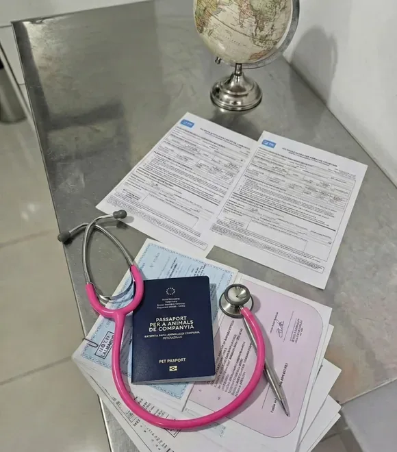
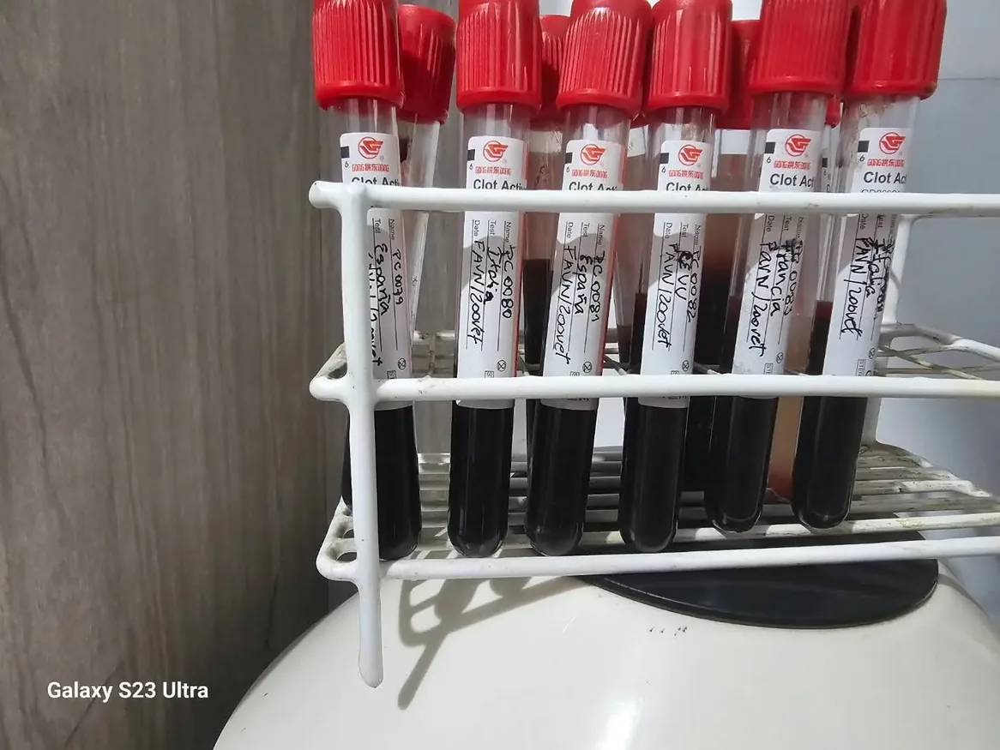
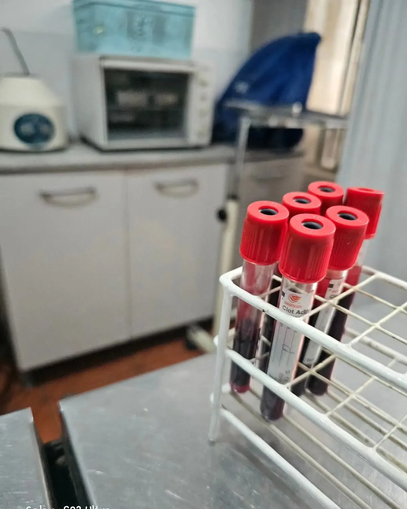

There's a distinction that's rarely made with any real precision: the difference between moving a pet from one country to another and ensuring its clinical and documentary viability within an international zoosanitary system. The first is logistics. The second is medicine.
Zoovet Travel was built on that distinction.
Founded in May 2013 in Trujillo, Peru, the practice was built on a specific clinical premise: moving dogs and cats internationally isn't a travel assistance service — it's a medical protocol with precise biological thresholds, irreversible time windows, and real consequences when it runs off-course. A pet turned away at customs isn't an administrative setback. It's the traceable outcome of a clinical chain that failed somewhere.

International Pet Export — Full Clinical Protocol
Clinical work at Zoovet Travel covers the full scope of the export process from Peru to more than twenty destination countries. That includes evaluating vaccination history and its temporal coherence with the receiving country's entry requirements, ISO 11784/11785 microchip implantation and reading, SENASA protocol management for the Zoosanitary Export Certificate, and coordination of the rabies antibody titration test — FAVN or RNATT — when the destination requires it.
France, Spain, Japan, Australia, New Zealand, post-Brexit United Kingdom: each has its own regulatory architecture that determines what gets done, in what order, and with how many days to spare. That calculation isn't a travel guide. It's a treatment plan with dates attached.
General clinical consultation — internal medicine, dermatology, endocrinology, nutrition, imaging — is part of the same ecosystem. Not as a separate service, but because an animal's export viability depends on its clinical condition at the time of certification. An animal with active pathology won't certify. One with an incomplete vaccination history won't certify. A brachycephalic breed without prior respiratory evaluation shouldn't fly, regardless of what the ticket says.

FAVN and RNATT Rabies Serology — Zoosanitary Certification SENASA
The rabies antibody titration test — FAVN (Fluorescent Antibody Virus Neutralisation) or RNATT — is the most stringent threshold in the export process to high-restriction zoosanitary countries. It doesn't certify vaccination: it certifies the animal's documented immune response to it. Results must exceed 0.5 IU/ml per OIE/WOAH standards for the export process to proceed.
Coordinating this test involves extracting the blood sample within the correct time window relative to the last vaccination, shipping to an accredited international reference laboratory, interpreting the result against the specific destination's requirements, and integrating that result into the zoosanitary file SENASA will use to issue the Zoosanitary Export Certificate. Every step has a date. None of them are optional.


Scientific Research — Veterinary Travel Medicine and Air Transport Physiology
Clinical practice in international pet export raised questions that had no consolidated answers in the Spanish-language veterinary literature. Those questions became a series of peer-reviewed open-access articles with verifiable DOIs, covering the physiological mechanisms involved in air transport of companion animals.
-
The gut–brain axis in dogs and cats during international transport: neuroendocrine integration, microbiota and energy metabolism
doi.org/10.5281/zenodo.19243363 -
Physiological compensation mechanisms and reserve limits to moderate hypoxia in canids and felids during air transport
doi.org/10.5281/zenodo.19243198 -
Technical Description of the Humoral Response Post-Rabies Vaccination and Methodological Foundations of Viral Neutralization Tests (RFFIT and FAVN) in Small Animals
doi.org/10.5281/zenodo.19243496 -
Air transport of brachycephalic dogs: physiological risks, risk factors, and regulatory framework
doi.org/10.5281/zenodo.19243638
All indexed on Zenodo under ORCID 0009-0002-6837-5311. The undergraduate thesis — on leptospirosis prevalence in human patients treated at Trujillo hospitals, 2015–2017 — is indexed on FAO AGRIS, the United Nations International System for Agricultural Science and Technology.
Full scientific series: zoovettravel.com/articles/ · Outreach articles: zoovettravel.com/articulos-interes/
Open regulatory knowledge — the information that didn't exist in systematic form
International companion animal transport had no freely accessible, systematic, verifiable technical bibliography in Spanish. The information existed, but it was scattered: buried in official regulations from destination countries, in government circulars updated without notice, in clinical criteria passed informally between veterinarians who had solved the problem before you. It wasn't citable. It wasn't verifiable. It couldn't be improved because it wasn't written down.
That gap is not an academic problem. It is a direct operational risk: an animal certified with incorrect information can be turned away at customs, subjected to prolonged quarantine, or in the worst case become a vector for introducing diseases into ecosystems that don't carry them. The OIE and FAO document with precision how poorly managed animal movement has historically been one of the main mechanisms for cross-border pathogen spread. Countries with the strictest sanitary restrictions — Australia, New Zealand, Japan, the United Kingdom — built those barrier systems precisely because they understand the cost of not having them.
I decided to document what thirteen years of export practice had produced as clinical and regulatory knowledge, and publish it under CC BY 4.0 on Zenodo CERN. Not as a repository of articles: as a technical reference library for the field. Fourteen articles with verifiable DOIs, gathered into a public community, integrated into a project on OSF. Any veterinarian, sanitary authority, or institution working with international animal transport can read them, cite them, update them, and challenge them.
That is how knowledge with consequences for biosecurity and ecosystem health should work: accessible, attributable, auditable.
Institutional Standing — CMVP 12434, CTI Vitae CONCYTEC, ORCID
Active registration with the Veterinary Medical College of Peru under number CMVP 12434, and membership on the Public Health Commission of CMVP La Libertad, place this work within the institutional framework of the Peruvian veterinary profession — not outside it.
Registration in the National Researcher Directory CTI Vitae — CONCYTEC (ID 0140858), with data verified by RENIEC, is the official Peruvian government record for academic activity.
Project Architecture — Knowledge Structure and Digital Strategy
Zoovet Travel is not only a clinic. It is also a knowledge structure: the Zoopedia — a trilingual pet export guide covering 20 destinations in Spanish, English and French —, a verified regulatory glossary, a process planner with documentary coherence logic, and an open-access scientific series.
That structure was designed and built by Carlos Ravello Joo, co-founder and head of digital architecture, strategy and the project's knowledge system. The division of roles is deliberate. Clinical knowledge and architectural knowledge are distinct disciplines. Zoovet works because neither of them tried to do the other's job.
What exists here is not a service promise. It is a record of what has been done, verifiable source by source, institution by institution.